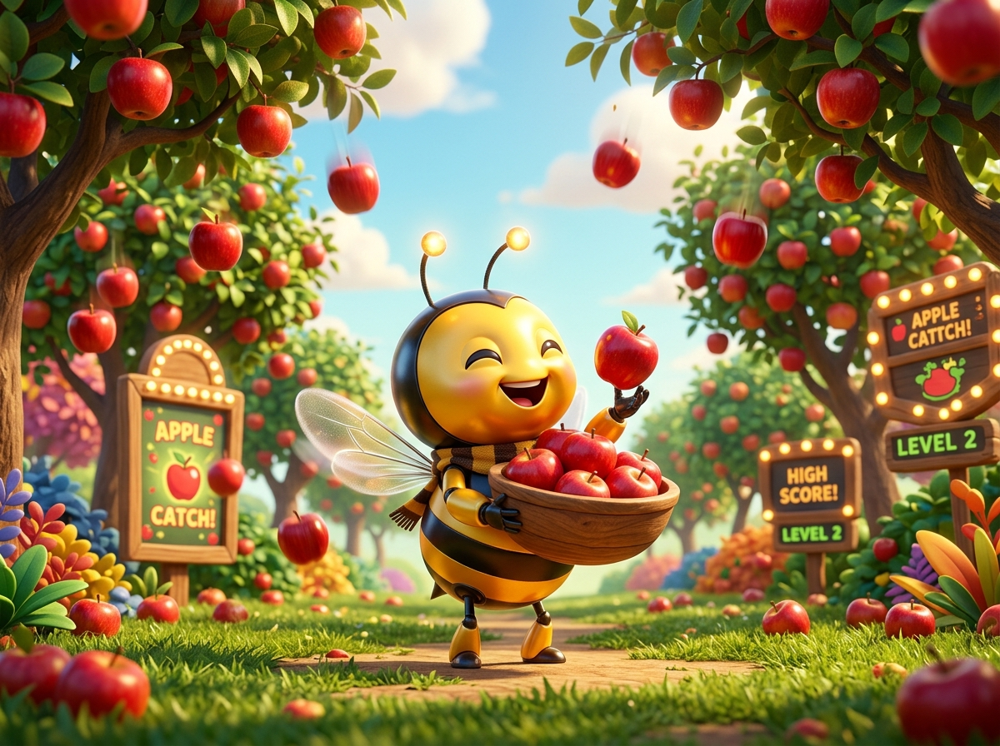

Beekoding
Platform Edukasi Koding & AI
STAGE 2: SESI 13
Selamat datang di STAGE 2 (LEVEL 2)! Hari ini kita naik kelas menjadi arsitek game arkade sesungguhnya. Kita akan merakit game seru di mana buah apel lezat berjatuhan dari langit dan kita menangkapnya memakai mangkuk interaktif!
change y by (-6)
Di dalam Scratch, setiap posisi memiliki alamat angka yang disebut Koordinat. Seperti alamat rumah, koordinat memberi tahu apel dan mangkuk harus berada di mana!
👉 Coba klik tombol preset atau klik di bidang kotak samping untuk memindahkan Apel secara langsung!
Bagaimana cara membuat apel meluncur jatuh dari langit? Kita gunakan balok motion change y by (-6) yang dibungkus dalam perulangan selamanya (forever)!
Agar apel tidak pernah habis, saat apel sudah menyentuh dasar layar (Y < -160), kita teleportasikan apel kembali ke langit atas dengan posisi horizontal (X) yang diacak!
<posisi y < -160>y: 170-200 sampai 200Pemain mengendalikan mangkuk penangkap dengan kursor mouse. Mangkuk harus bergerak ke kiri-kanan dengan sangat halus, tapi TIDAK BOLEH terbang ke atas langit!
set y to (-140)mouse xSaat apel berhasil masuk ke dalam mangkuk, game harus mengenali keberhasilan pemain! Apel membunyikan suara Chomp, menambah skor +1, lalu melesat kembali ke langit.
<menyentuh [Bowl]?>start sound [Chomp]change [Skor] by (1)Ayo uji coba logika game kita secara nyata di simulator Scratch berikut! Klik bendera hijau 🏴 lalu gerakkan kursor mouse ke kanan dan kiri untuk menangkap apel yang jatuh!
Saat membuat game, programmer hebat tidak pernah takut dengan error. Mari kita pelajari 2 masalah umum yang sering muncul dan cara memperbaikinya!
go to mouse-pointer! Kunci Y dengan set x to mouse x.pergi ke [mouse-pointer]atur x ke [x mouse]Luar biasa! Hari ini kalian telah resmi menyelesaikan game arkade pertama di Stage 2 dengan konsep matematika dan logika yang sangat hebat!
Game Tangkap Apel buatanmu sudah siap dimainkan dan dipamerkan bersama keluarga!
Di pertemuan berikutnya, kita akan menambahkan efek visual spektakuler (Game Juice) yang membuat game kita berkilau seperti game di smartphone!
create cloneJangan lupa simpan proyek kodingmu hari ini (File -> Save to computer)! Sampai jumpa pekan depan!